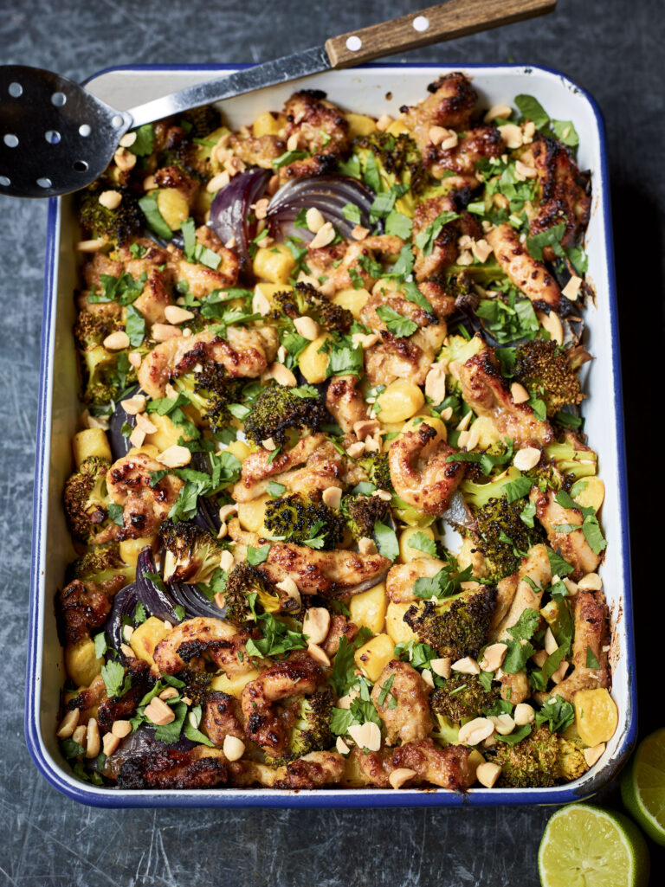

One Tray Peanut Chicken

Description
This delicious Peanut Chicken Traybake, mixed with gnocchi, onions and broccoli, is a crowd-pleasing recipe that makes an easy midweek dinner.
It was invented by Nadiya Hussain, who rose to fame following her ein of the Great British Bake Off.
Ingredients
- 250g Gnocci
- 1kg Boneless Skinless Chichen Thighs
- 4 tbsp Honey
- 4 tbsp Vegetale Oil
- 5 tbsp Thai Green Curry Paste
- 5 tbsp Peanut Butter
- 1 tsp Salt
- 2 Heads of Broccoli
- 2 Red Onions
- 3 tbsp Salted Peanuts
- 1 Lime
Method
- Preheat the oven to 200°C/fan 180°C and have a roasting dish (about 30cm x 22cm x 5cm) at the ready.
- Bring a pan of water to the boil, then add the gnocchi. Boil until they come to the surface, then take off the heat, drain and set aside.
- Put the chicken into a large bowl. Add the honey, oil, curry paste, peanut butter and salt, and mix it all well with your hands, massaging in all that flavour. Then put it into the roasting dish along with the broccoli, onions and gnocchi and bake for 30 minutes, giving it a stir halfway through.
- Serve topped with the chopped nuts, coriander and a squeeze of lime.
Home